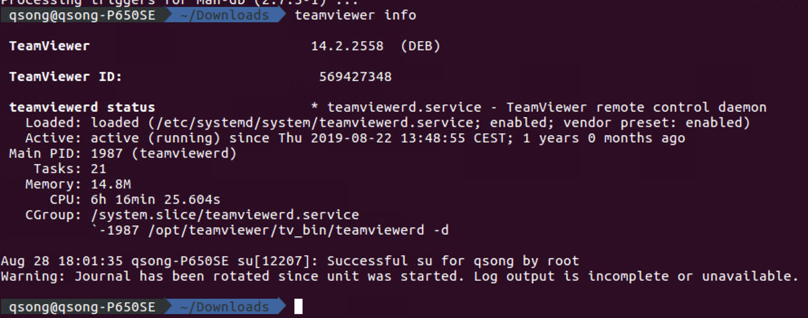
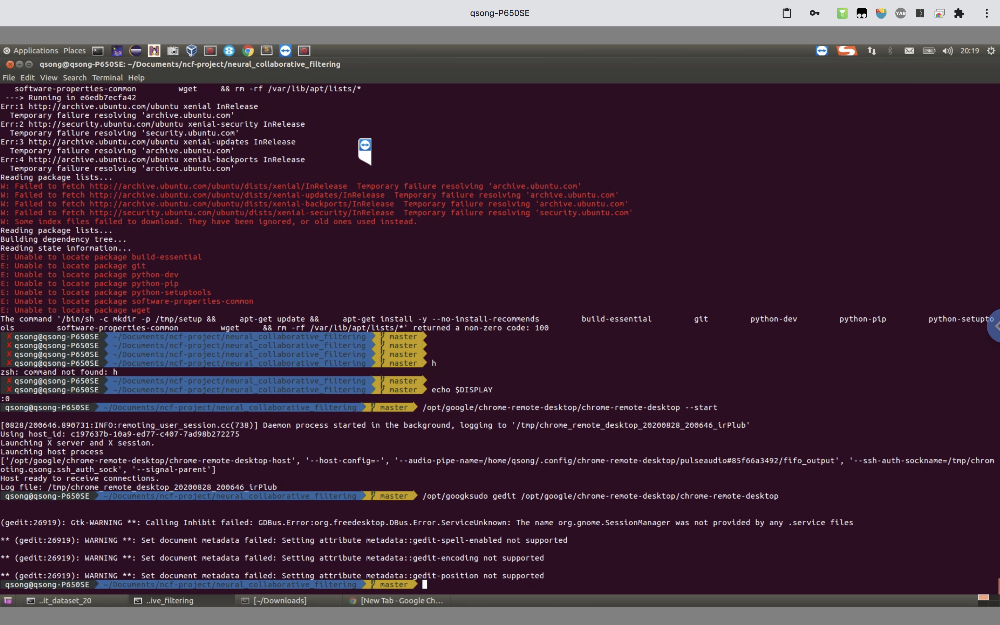
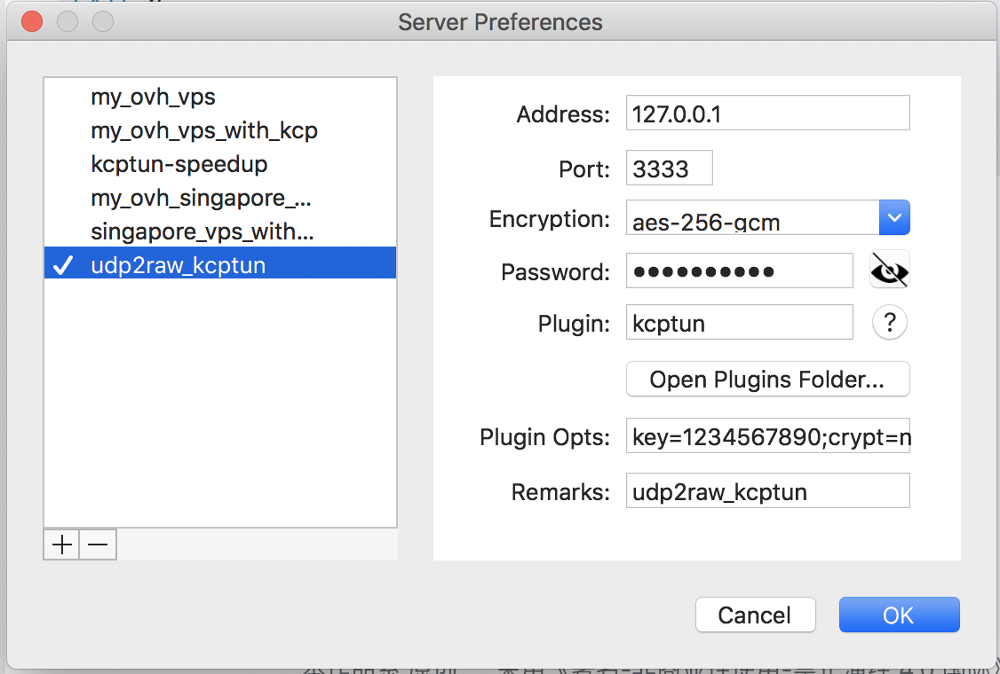

VPS 提供商选择
我最终选择了 Vultr 家的，因为有新手注册送50美金的优惠，而且是按时间收费
https://www.10besty.com/best-vps-hosting-services/ 可以看看这个文章，分析如何选取VPS服务商
Create a new non-root user
OVH 上购买的 VPS 在创建之初只有一个user: root. 使用下列命令查看当前VPS上都有哪些用户: 1
cut -d: -f1 /etc/passwd
奇怪的是，当时从root以hansomesong的用户登录的时候，居然不是默认切换到该用户的home directory很奇怪，最后只能在.bashrc文件中加了一个cd指令解决
添加GUI支持
Install VNC server + Xfce4
参考这个链接, 解释非常详细
Ubuntu Desktop requires downloading about 500 MB of packages and an additional 2 GB of disk space. If that's too much, you can install a more lightweight desktop environment called Xfce. It's just 45 MB of packages that use an extra 175 MB of space.
依靠 Teamviewer
https://vitux.com/how-to-install-teamviewer-on-ubuntu/ 该帖子介绍了如何通过CLI界面安装teamviewer
https://serverfault.com/questions/547206/how-to-find-my-teamviewer-id-on-ssh 该帖子描述了如何通过命令行界面获取安装的teamviewer的ID以及如何设置链接密码
X11forwarding和GUI desktop有何区别联系呢？
不知道为啥，每次命令行安装teamviewer结束之后，都会遇到如下错误: 1
2
3
4
5
6
7
8
9
10
11
12
13
14
15
16
17
18
19
20
21pst@ubuntu-openstack:~$ sudo apt-get update
...
Ign:13 http://linux.teamviewer.com/deb stable InRelease
Ign:14 http://linux.teamviewer.com/deb stable Release
Ign:15 http://linux.teamviewer.com/deb stable/main amd64 Packages.diff/Index
...
Ign:19 http://linux.teamviewer.com/deb stable/main amd64 Packages
Ign:20 http://linux.teamviewer.com/deb stable/main i386 Packages
Ign:17 http://linux.teamviewer.com/deb stable/main all Packages
Ign:18 http://linux.teamviewer.com/deb stable/main Translation-en
...
Err:19 http://linux.teamviewer.com/deb stable/main amd64 Packages
Unable to connect to 172.27.254.1:http:
Fetched 3711 kB in 30s (120 kB/s)
Reading package lists... Done
W: The repository 'http://linux.teamviewer.com/deb stable Release' does not have a Release file.
N: Data from such a repository can't be authenticated and is therefore potentially dangerous to use.
N: See apt-secure(8) manpage for repository creation and user configuration details.
E: Failed to fetch http://172.27.254.1/UserCheck/PortalMain?IID=8C811C51-17AD-2746-8F44-757FD1A3A938&origUrl=aHR0cDovL2xpbnV4LnRlYW12aWV3ZXIuY29tL2RlYi9kaXN0cy9zdGFibGUvbWFpbi9iaW5hcnktYW1kNjQvUGFja2FnZXM Unable to connect to 172.27.254.1:http:
E: Failed to fetch http://172.27.254.1/UserCheck/PortalMain?IID=1113313D-D6BA-3C1B-3173-AFB380757E7F&origUrl=aHR0cDovL2xpbnV4LnRlYW12aWV3ZXIuY29tL2RlYi9kaXN0cy9zdGFibGUvbWFpbi9iaW5hcnktaTM4Ni9QYWNrYWdlcw Unable to connect to 172.27.254.1:http:
E: Some index files failed to download. They have been ignored, or old ones used instead.1
2sudo apt-key remove TeamViewer2017.asc
sudo rm /etc/apt/sources.list.d/teamviewer.list
2020-08-27 远程更新teamviewer
credit: https://community.teamviewer.com/t5/Linux/how-to-change-and-or-show-teamviewer-password-remotely-over-ssh/td-p/14732 teamviewer info输出 1
2
3teamviewer info #命令行查看teamviewer基本信息，比如ID,运行状态
or
teamviewer –info print id
原来Teamviewer配置文件在/opt/teamviewer/config/global.conf中，而且根据下图显示，这个文件不建议手动修改!  teamviewer配置文件内容
teamviewer配置文件内容
1 | sudo teamviewer –daemon stop #停止teamviewer |
PS: 准备了那么多准备工作，结果最后只需要先通过下载teamviewr 15的DEB安装包，然后直接在终端中输入sudo dpkg -i teamviewer*, 虽然teamviewer会话会中断，但是稍等片刻，便可以通过更新之前的ID/密码重新登录访问了。。。根本无需通过dpkg卸载再安装。。。看来包管理软件也是很智能的，早已经在安装的时候完成"卸载旧版本-安装新版本-启动进程"这一串工作了。。。
PS：2020-08-29凌晨, 通过Global模式翻墙使用Teamviewe连接里尔的服务器，前所未有的流畅！！！而且是在更新该服务器上Teamviewer之前！！也没有因为远程teamviewer版本低而每5分钟一断开
Google remote desktop可以在teamviewer之外再开辟一条访问通道，但是遗憾的是，似乎看不到Linux桌面，但是好在可以提供一个命令行以及浏览器访问界面。
Ubuntu系统下，系统开机自启动的文件(即.desktop文件)都放置在目录：/etc/xdg/autostart 我们只要将自己想要开机自启动的程序都放到里面里面就好了。
比如我们想让google chrome开机自启动: 1
cd /usr/share/applications && ls
.desktop文件中有一个google-chrome.desktop,然后我们执行下面代码来创建一个软链接: 1
sudo ln -s /usr/share/applications/google-chrome.desktop /etc/xdg/autostart/
google chrome已经开机自启动了。
chrome开机自启动即可保证，系统一旦因故重启，我们依然可以通过chrome remote desktop插件登录远程机器。
回顾下，Linux系统下软件卸载问题： >dpkg and apt-get are 2 different ways of installing software. Basically apt-get, aptitude, and synaptic are built on top of debian's dpkg package management program. They all perform the same basic function - package management, but have some extra features. 1 of the extra features of apt-get is that it will install dependencies and dpkg does not. >Regarding the -p/purge ... The -P in dpkg means --purge and will remove everything, including setttings and configuration files. From the manual: >The same goes for purge in apt-get. Basically it is the same option. Mind you: removal of dependencies does not happen with dpkg. apt-get does remove dependencies
Due credit to the source: https://superuser.com/questions/778028/configuring-chrome-remote-desktop-with-ubuntu-gnome-14-04
Chrome Remote Desktop最终显示效果 虽然显示还是有些瑕疵，但是已经非常堪用了！！！开心！！！
据称deja-dup-monitor和chrome-remote-desktop有冲突，会导致ubuntu开机时，，deja-dup-monitor占用大量内存，导致读写swap分区。 解决办法 进入ubuntu 软件中心，搜索deja，直接卸载该软件。我观察了一阵儿，似乎没有这个问题，
Shadowsocks 安装 (通过网友提供的脚本)
GFW实现网络封锁的手段主要有两种：dns劫持和ip封锁（除此之外，还有dns污染和关键词过滤，这里我们不讨论. ## Shadowsocks 简介 Shadowsocks 是 clowwindy 开发的一个开源代理加密协议，有很多用途，当然最常见的还是拿来翻墙。事实上现在所有的商业的翻墙代理（云梯，多态等）底层都是Shadowsocks技术。
https://medium.com/@thomas_summon/%E6%B5%85%E8%B0%88vpn-vps-proxy%E4%BB%A5%E5%8F%8Ashadowsocks%E4%B9%8B%E9%97%B4%E7%9A%84%E8%81%94%E7%B3%BB%E5%92%8C%E5%8C%BA%E5%88%AB-b0198f92db1b Shadowsocks 的一个较为全面的介绍
参考链接：https://vc2tea.com/whats-shadowsocks/ 写的非常不错！清晰！易懂！
ShadowsocksR (SSR) 是 Shadowsock 的继承者。
安装 (通过网友提供的脚本)
为了防止原链接失效，还是手动复制一遍：
使用root用户登录，运行以下命令: 1
2
3wget --no-check-certificate -O shadowsocks-all.sh https://raw.githubusercontent.com/teddysun/shadowsocks_install/master/shadowsocks-all.sh
chmod +x shadowsocks-all.sh
./shadowsocks-all.sh 2>&1 | tee shadowsocks-all.log1
2
3
4
5
6
7
8
9
10
11
12Congratulations, Shadowsocks-Python server install completed!
Your Server IP : <your.vps.ip.address>
Your Server Port : 9164
Your Password : <password-to-shadowsocks-python-server>
Your Encryption Method: aes-256-gcm
Your QR Code: (For Shadowsocks Windows, OSX, Android and iOS clients)
ss://YWVzLTI1Ni1nY206MTIzNDU2QDUxLjc3LjIxNS4xODo5MTY0
Your QR Code has been saved as a PNG file path:
/root/shadowsocks_python_qr.png
Welcome to visit: https://teddysun.com/486.html
Enjoy it!
ShadowsocksX Python libev Go 都有啥区别呢？ 这次安装选下 libev版本 需要设定密码 依然设定 123456 1
2
3
4
5
6
7
8
9
10
11
12
13
14
15
16
17
18
19
20
21
22
23
24
25
26
27
28
29
30
31
32
33
34
35
36
37
38
39
40
41
42
43
44
45
46
47
48
49
50
51
52
53
54
55
56
57Which Shadowsocks server you'd select:
1) Shadowsocks-Python
2) ShadowsocksR
3) Shadowsocks-Go
4) Shadowsocks-libev
Please enter a number (Default Shadowsocks-Python):4
You choose = Shadowsocks-libev
Please enter password for Shadowsocks-libev
(Default password: teddysun.com):123456
password = 123456
Please enter a port for Shadowsocks-libev [1-65535]
(Default port: 13313):9164
port = 9164
Please select stream cipher for Shadowsocks-libev:
1) aes-256-gcm
2) aes-192-gcm
3) aes-128-gcm
4) aes-256-ctr
5) aes-192-ctr
6) aes-128-ctr
7) aes-256-cfb
8) aes-192-cfb
9) aes-128-cfb
10) camellia-128-cfb
11) camellia-192-cfb
12) camellia-256-cfb
13) xchacha20-ietf-poly1305
14) chacha20-ietf-poly1305
15) chacha20-ietf
16) chacha20
17) salsa20
18) rc4-md5
Which cipher you'd select(Default: aes-256-gcm):
cipher = aes-256-gcm
[Info] Starting install package autoconf
Do you want install simple-obfs for Shadowsocks-libev? [y/n]
(default: n):y
You choose = y
Please select obfs for simple-obfs:
1) http
2) tls
Which obfs you'd select(Default: http):1
obfs = http
Press any key to start...or Press Ctrl+C to cancel
卸载方法 (通过网友提供的脚本)
若已安装多个版本，则卸载时也需多次运行（每次卸载一种。使用root用户登录，运行以下命令： 1
./shadowsocks-all.sh uninstall
启动脚本
启动脚本后面的参数含义，从左至右依次为：启动，停止，重启，查看状态。 1
2
3
4
5
6
7
8 Shadowsocks-Python 版：
/etc/init.d/shadowsocks-python start | stop | restart | status
ShadowsocksR 版：
/etc/init.d/shadowsocks-r start | stop | restart | status
Shadowsocks-Go 版：
/etc/init.d/shadowsocks-go start | stop | restart | status
Shadowsocks-libev 版：
/etc/init.d/shadowsocks-libev start | stop | restart | statusshadowsocks-python 程序是通过一个 Python 程序启动了ssserver程序 1
2
3root@vpsname:~# ps aux | grep ssserver
root 4623 0.0 0.7 51012 15804 ? Ss 17:08 0:02 /usr/bin/python /usr/local/bin/ssserver -c /etc/shadowsocks-python/config.json -d start
root 6256 0.0 0.0 12916 976 pts/1 S+ 22:45 0:00 grep --color=auto ssserver
各版本默认配置文件
1 | Shadowsocks-Python 版： |
Mac OSX 客户端如何使用 Shadowsocks
注意：以下内容和VPS配置无关，都是在 VPS 已经安装好 Shadowsocks 的基础上在客户端配置的！
通过Shadowsocks-X NG客户端
ShadowsocksX-NG 是官方支持的 macOS 下的 shadowsocks 客户端，支持诸多 shadowsocks 协议的特性。这篇帖子讲了ShadowsocksX-NG的工作原理。重要信息如下: * ShadowsocksX-NG 只是 Swift 写的一个 GUI 而已, 底层依赖 ss-local 程序 * ss-local 启动后监听在 1080 端口，接受 socks 协议的请求 * http 协议的代理，则是集成了 privoxy 程序，监听在 1087 端口，然后转发到 1080 端口上，实现对 http 协议的代理 * 还有一个 pac server，监听在 1089 端口，用来给系统代理提供 PAC 文件
通过客户端的好处是，全局都翻墙，而不仅仅只是浏览器翻墙了 下载地址：https://github.com/shadowsocks/ShadowsocksX-NG/releases
关于如何使用 Shadowsocks-X 的图文教程: https://enlightor.wordpress.com/2018/04/18/shadowsocksx-ng-on-macosx-10-11-%E4%BD%BF%E7%94%A8%E6%95%99%E7%A8%8B/
PAC (Proxy Auto Configuration) 文件的放置路径: .ShadowsocksX-NG 文件夹下。
顾名思义，全局模式 (Global mode) 就是所有流量都走服务器，而 自动代理模式 (Proxy Auto Configuration 是通过代理自动配置文件(PAC文件)来配置走服务器的流量。使用自动代理模式可以实现国内网站直连，国外网站使用代理连接，即加速了浏览国内网站的速度，又节省了服务器的流量，一石二鸟。 ### 通过Chrome插件
通过ProxyChains让Iterm终端上网
http://haoweiguang.me/2017/05/08/Mac%E4%B8%8Bshadowsocks%E5%85%A8%E8%87%AA%E5%8A%A8%E5%9C%B0%E4%BB%A3%E7%90%86%E7%BF%BB%E5%A2%99/
浏览器科学上网只是一部分，想让命令行工具科学上网肿么办？ ProxyChains 就是一个这样用途的工具，它可以让你的其它工具通过 Socks 或 HTTP 代理访问网络。
1 | brew install proxychains-ng |
编辑配置文件 mvim /usr/local/etc/proxychains.conf
为git,nodejs,gradle,maven等进行代理服务器的配置 http://www.snowdream.tech/2016/03/31/proxy-settings-with-shadowsocks/#IDEA
优化 [^shadowsocks-setup]
BBR加速
Shadowsocks加速优化流行的有很多方式，我进行尝试和比较之后，推荐大家使用BBR（一种TCP拥塞控制算法）来加速。
根据帖子：https://zhuanlan.zhihu.com/p/36750024 安装的BBR
加速效果比较：https://ssr.tools/674 ### 锐速加速两种方案 锐速已经停更，对于新的系统内核支持有限，建议改用谷歌的开源方案：Google BBR 对 SS 进行优化加速。效果都差不多的。
KCPTUN 加速
KCPTUN是一款服务器双边加速工具，可以将服务器的TCP流量，比如Shadowsokcs/Shadowsocksr的流量，转化为KCP协议的UDP流量发出。作为一款暴力发包工具，KCPTUN可以有效解决丢包问题，明显提升传输速度。
Kcptun是一个非常简单和快速的，基于KCP协议的UDP隧道，它可以将TCP流转换为KCP+UDP流。而KCP是一个快速可靠协议，能以比TCP浪费10%-20%的带宽的代价，换取平均延迟降低 30%-40%，且最大延迟降低三倍的传输效果。
Kcptun是KCP协议的一个简单应用，可以用于任意TCP网络程序的传输承载，以提高网络流畅度，降低掉线情况。
服务器端
通过以下数条指导令安装 1
2
3wget --no-check-certificate https://github.com/kuoruan/shell-scripts/raw/master/kcptun/kcptun.sh
chmod +x ./kcptun.sh
./kcptun.sh
安装过程中会有提示选项，这里有几点需要注意：
- 端口：默认29900，即为KCPTUN与其客户端连接使用的端口，默认即可。
- 要加速的地址：默认127.0.0.1。
- 要加速的端口：设置为你的SS/SSR使用的端口。
- 密码：自己设置，用于KCPTUN客户端连接使用，不要使用默认密码。
- 加密方式选择：较强的加密方式会影响网速，建议默认aes或不加密。因为我们是配合ss使用的，所以不必加密，直接选none就行
- 加速模式：传输速度自然是fast3最大，流量也消耗最大。所以追求速度的可以选fast3，fast2是最折中的。默认fast即可。随后可以手动修改为其它模式，测试加速效果。
- MTU：默认1350即可。
- sndwnd：发送窗口大小，与服务器的上传带宽大小有关，这项与rcvwnd的比例会影响加速效果，可以暂时设置为默认的512。
- rcvwnd：接收窗口大小，与服务器的下载带宽大小有关，也可以暂设置为默认的512，或者1024也可以。 以下几项中，除了数据压缩外，其它保持默认参数即可。建议关闭数据压缩，可以在一定程度上提升传输效率。其余各项设置，保持默认即可，设置完成后，按任意键开始安装过程。
注意：客户端和服务端的参数 -sndwnd 2048 -rcvwnd 2048 这两个值不要大于你的本地宽带，否则流量消耗会浪费好几倍。适用大部分 ADSL 接入（非对称上下行）的参数。 其它带宽请按比例调整，比如 50M ADSL，把 -sndwnd -rcvwnd 减掉一半。100M 就是 2048，50M 就是 1024。这两个值可以逐渐调小，但是不能比本地的实际宽带大！ 注意：产生大量重传时，一定是窗口偏大了
- nc（关闭拥塞控制），其实据网友的测试，最重要的就是这个参数 如果不关闭的话，基本没有加速效果，所以预置的几种模式都把它的值设为了 1。[https://www.keakon.net/2016/10/29/用kcptun加速Shadowsocks]
关于kcptun参数调整设置[https://blog.csdn.net/weixin_41732074/article/details/88747400]
KCPTUN常用功能及命令：
- KCPTUN安装目录：/usr/local/kcptun
- KCPTUN的参数配置文件：/usr/local/kcptun/server-config.json
- 启动：supervisorctl start kcptun
- 停止：supervisorctl stop kcptun
- 重启：supervisorctl restart kcptun
- 状态：supervisorctl status kcptun
- 卸载：./kcptun.sh uninstall
可以通过 ./kcptun.sh help 查看脚本的使用说明，比如如何查看日志，查看服务器端配置情况，添加多端口加速等等
kcptun正常运转时的日志: 1
2
3
4
5
6
7
8
9
10
11
12
13
14
15
16
17
18
19
20
21
22
23
24
25
26
27
28
29
30
31
32
33
34
35
36
37 2019-12-31 07:46:39 INFO: plugin "plugins/kcptun" enabled
2019-12-31 07:46:39 INFO: using tcp fast open
2019-12-31 07:46:39 INFO: initializing ciphers... aes-256-gcm
2019-12-31 07:46:39 INFO: listening at 127.0.0.1:1086
2019-12-31 07:46:39 INFO: tcp port reuse enabled
2019/12/31 07:46:39 version: 20190905
2019/12/31 07:46:39 initiating key derivation
2019/12/31 07:46:39 listening on: 127.0.0.1:63259
2019/12/31 07:46:39 encryption: aes
2019/12/31 07:46:39 nodelay parameters: 1 20 2 1
2019/12/31 07:46:39 remote address: <ip>.<of>.<my>.<vps>:29900
2019/12/31 07:46:39 sndwnd: 512 rcvwnd: 512
2019/12/31 07:46:39 compression: true
2019/12/31 07:46:39 mtu: 1350
2019/12/31 07:46:39 datashard: 10 parityshard: 3
2019/12/31 07:46:39 acknodelay: false
2019/12/31 07:46:39 dscp: 0
2019/12/31 07:46:39 sockbuf: 4194304
2019/12/31 07:46:39 smuxbuf: 4194304
2019/12/31 07:46:39 keepalive: 10
2019/12/31 07:46:39 conn: 1
2019/12/31 07:46:39 autoexpire: 0
2019/12/31 07:46:39 scavengettl: 600
2019/12/31 07:46:39 snmplog:
2019/12/31 07:46:39 snmpperiod: 60
2019/12/31 07:46:39 quiet: false
2019/12/31 07:46:39 tcp: false
2019/12/31 07:46:39 connection: 0.0.0.0:54581 -> <ip>.<of>.<my>.<vps>:29900
2019/12/31 07:46:40 stream opened in: 127.0.0.1:63263 out: <ip>.<of>.<my>.<vps>:29900(3)
2019/12/31 07:46:40 stream opened in: 127.0.0.1:63265 out: <ip>.<of>.<my>.<vps>:29900(5)
2019/12/31 07:46:40 stream opened in: 127.0.0.1:63267 out: <ip>.<of>.<my>.<vps>:29900(7)
2019/12/31 07:46:40 stream closed in: 127.0.0.1:63267 out: <ip>.<of>.<my>.<vps>:29900(7)
2019/12/31 07:46:41 stream opened in: 127.0.0.1:63270 out: <ip>.<of>.<my>.<vps>:29900(9)
2019/12/31 07:46:41 stream opened in: 127.0.0.1:63272 out: <ip>.<of>.<my>.<vps>:29900(11)
2019/12/31 07:46:42 stream opened in: 127.0.0.1:63275 out: <ip>.<of>.<my>.<vps>:29900(13)
2019/12/31 07:46:42 stream opened in: 127.0.0.1:63276 out: <ip>.<of>.<my>.<vps>:29900(15)
...
服务器端安装与使用
在shadowsocks插件中只需要填写kcptun，当然前提是这个命令被放在$PATH涵盖的路径之下，不然，需要填写完整路径。关于参数，
“key=123456;crypt=none;mode=fast;mtu=1350;sndwnd=512;rcvwnd=512;datashard=10;parityshard=3;dscp=0” 这种格式就好，在kcptun服务器端安装成功只有，会生成这种字符串。
注意:
在使用kcptun的时候，没有按照kcptun官网github网站上的建议，即没有在/etc/sysctl.conf中添加处理UDP的配置，导致使用kcptun加速之后的效果反而还不如不加速，甚至会出现断网。
注意在shadowsocks-NR中password给的还是shadowsocks进程的密码，而不是kcptun进程的密码。
Kcptun 参数调优
https://blog.csdn.net/weixin_41732074/article/details/88747400
注意: 2019-9-22至2019-9-29回国期间，由于建国70年国庆的缘故，国内安防级别升级，所以我的VPS的公有IP地址被网络长城封禁了。但是我惊讶的发现，带着KCPTUN的代理依然可以正常使用！我猜想是，网络长城封禁了来自OVH且走TCP的流量，因为这被判定为翻墙流量，而KCPTUN走的是UDP，所以幸运地绕过了网络长城！这是个意外的发现。可以考虑再用上混淆等技术？
注意: 2019-12-24至2020-01-03回国期间，发现我的 kcptun + shadowsocks翻墙工具在西安不好用了。首先肯定不是完全封禁，25/26在北京的时侯还是工作良好的，虽然在机场有时候也连接不上。而在西安，则连接不上的时间越来越长。我怀疑是不是西安的运营商QoS策略问题，毕竟是大规模的UDP流量。
我又在OVH账户里创建了一个位于新加坡的VPS，这次发现，SSH连接(端口号22)有时候会连接不上，即使连接上了，延时巨大，还很容易断掉，我怀疑是受到了GFW的强烈干扰。幸好之前位于法国的VPS，可以支持通过443端口访问，延时也不算高，可以通过先SSH登录法国的VPS，然后再登录新建的位于新加坡的VPS.
https://zhuanlan.zhihu.com/p/64467370 这个知乎帖子详细分析了国内三大运营商宽带出海的情况 非常值得一读！原来翻墙线路选择有这么大的学问
https://www.newlearner.site/2019/07/06/vultr-clivps-anniversary.html 关于VPS提供商选择的问题！一些VPS使用心得！看来搬瓦工比较推荐哈！
2020-02-25: 这一天，我彻底回了国，结束了为期近10年的法漂岁月。回国之前购买的expressVPN居然在西安不好使！无奈只好重新捡起了shadowsocks+kcptun方案。让人惊讶的是，这次居然没有任何问题，完全可以正常使用！！这是何故呢？ 有可能是OVH的VPS超售问题？但如果是VPS流量超售，为啥19年年末在北京的时候没问题，但是回到西安就有了问题。在无法翻墙的情况下，可以通过使用站长工具: https://ping.chinaz.com/, 看看大多数PING结果是否为time out, 如果是的话，那就VPS去背这个锅。 但如果是西安本地运营商的问题，为啥这次回来了反而可以了？
Shadowsocks + kcptun + udp2raw 翻墙
udp2raw-tunnel 项目地址: https://github.com/wangyu-/udp2raw-tunnel ## VPS端 将下载好的udp2raw_amd64放置于路径/usr/local/bin之下。然后创建一个service来管理udp2raw_amd64的启动/停止/重启等。
1 | ./udp2raw_amd64 -s -l0.0.0.0:9191 -r 127.0.0.1:29900 -a -k "brysj12345" --raw-mode faketcp |
说明: VPS端程序持续监听本地的9191端口。此端口收到的流量会被转发给29900端口(kcptun服务端监听的端口)。具体参数说明: * -a: xxxxx * -s: 服务器模式 * -l: 监听的地址以及端口号
为了让udp2raw-tunnel开机启动，我们为之创建相应的service [Unit] Description=udp2raw service which redirects traffic incoming from port 9191 to 29900 (port used by kcptun server) on VPS server. Note that if kcptun server changes monitored port, the present service should be accordingly adapted. After=network.target
[Service] ExecStart=/usr/local/bin/ udp2raw_amd64 -s -l0.0.0.0:9191 -r 127.0.0.1:29900 -a -k "brysj12345" --raw-mode faketcp
[Install] WantedBy=multi-user.target ## 客户端 思路: 在mac本地端启动
除了shadowsocks之外，客户端需要下载udp2raw客户端。运行命令为: 1
/udp2raw_mp_nolibnet -c -l0.0.0.0:3333 -r139.99.88.29:9191 -k "passwd" --raw-mode easy-faketcp
https://segmentfault.com/a/1190000018458044 这里面给出了比较好的 udp2raw-tunnel启动示例。
VPS configurations 一些思考 # 如何确保SSH链接执行的命令在SSH链接中断的情况下继续执行？？？
DEBUG
kcptun 翻墙链接不稳定
1 | 2019/12/31 07:55:19 session marked as expired <ip>.<of>.<france>.<vps>:29900 |
在出问题的同时，我试图ssh进入到远程VPS中，看看server端的日志(其实到底是服务器端的问题还是客户端的问题)，发现ssh链接过程也很慢 1
2
3
4
5
6 qsong@song-macbookpro ~ ssh vps -vvv
...
debug1: Connecting to 51.77.215.18 [51.77.215.18] port 443.
(上下两条信息间隔有点儿久。。。)
debug1: Connection established.
...
奇怪啊，过了大概20来分钟，又可以正常翻墙了，在打开youtube的过程中，还出现了下面这个问题: 1
2
32019/12/31 08:11:51 stream closed in: 127.0.0.1:63648 out: 51.77.215.18:29900(21)
2019-12-31 08:11:51 ERROR: remote_recv_cb_recv: Connection reset by peer
2019/12/31 08:11:53 stream closed in: 127.0.0.1:63657 out: 51.77.215.18:29900(23)
kcptun + udp2raw 翻墙链接不稳定
在西安的时候，发现很神奇的现象: 北京时间早上6点多醒来(法国时间将近午夜)，一切翻墙链接均可用，不管是shadowsocks + Kcptun还是shadowsocks+kcptun+udp2raw。工作正常的情况下，shadowsocks的日志中(路径:~/Library/Logs/ss-local.log)大量显示如下记录: 1
2
3
4
5
6
7
8
9
10
11
12
13
14
15
16
17...
2019/12/31 07:15:04 stream opened in: 127.0.0.1:62660 out: 127.0.0.1:3333(33)
2019/12/31 07:15:04 stream opened in: 127.0.0.1:62662 out: 127.0.0.1:3333(35)
2019/12/31 07:15:05 stream opened in: 127.0.0.1:62666 out: 127.0.0.1:3333(37)
2019/12/31 07:15:05 stream opened in: 127.0.0.1:62667 out: 127.0.0.1:3333(39)
2019/12/31 07:15:05 stream closed in: 127.0.0.1:62662 out: 127.0.0.1:3333(35)
2019/12/31 07:15:07 stream opened in: 127.0.0.1:62674 out: 127.0.0.1:3333(41)
2019/12/31 07:15:16 stream closed in: 127.0.0.1:62667 out: 127.0.0.1:3333(39)
2019/12/31 07:15:21 stream closed in: 127.0.0.1:62566 out: 127.0.0.1:3333(5)
2019/12/31 07:15:25 stream closed in: 127.0.0.1:62591 out: 127.0.0.1:3333(13)
2019/12/31 07:15:25 stream closed in: 127.0.0.1:62608 out: 127.0.0.1:3333(17)
2019/12/31 07:15:25 stream closed in: 127.0.0.1:62666 out: 127.0.0.1:3333(37)
2019/12/31 07:15:25 stream opened in: 127.0.0.1:62695 out: 127.0.0.1:3333(43)
2019/12/31 07:15:25 stream closed in: 127.0.0.1:62627 out: 127.0.0.1:3333(21)
2019/12/31 07:15:26 stream closed in: 127.0.0.1:62633 out: 127.0.0.1:3333(25)
2019/12/31 07:15:26 stream closed in: 127.0.0.1:62630 out: 127.0.0.1:3333(23)
...1
2
3
4
5
6
7
8
9
10
11
12
13
14
15
16
17
18
19
202019/12/31 07:29:15 session marked as expired 127.0.0.1:3333
2019/12/31 07:29:15 SetReadBuffer: set udp4 0.0.0.0:52396: setsockopt: no buffer space available
2019/12/31 07:29:15 SetWriteBuffer: set udp4 0.0.0.0:52396: setsockopt: no buffer space available
2019/12/31 07:29:15 connection: 0.0.0.0:52396 -> 127.0.0.1:3333
2019/12/31 07:29:15 stream opened in: 127.0.0.1:62875 out: 127.0.0.1:3333(3)
2019/12/31 07:29:15 session normally closed 127.0.0.1:3333
2019/12/31 07:29:16 stream opened in: 127.0.0.1:62878 out: 127.0.0.1:3333(5)
2019/12/31 07:29:24 stream opened in: 127.0.0.1:62882 out: 127.0.0.1:3333(7)
2019/12/31 07:29:45 stream closed in: 127.0.0.1:62875 out: 127.0.0.1:3333(3)
2019/12/31 07:29:45 stream closed in: 127.0.0.1:62878 out: 127.0.0.1:3333(5)
2019/12/31 07:29:45 stream closed in: 127.0.0.1:62882 out: 127.0.0.1:3333(7)
2019/12/31 07:29:49 session marked as expired 127.0.0.1:3333
2019/12/31 07:29:49 SetReadBuffer: set udp4 0.0.0.0:65215: setsockopt: no buffer space available
2019/12/31 07:29:49 SetWriteBuffer: set udp4 0.0.0.0:65215: setsockopt: no buffer space available
2019/12/31 07:29:49 connection: 0.0.0.0:65215 -> 127.0.0.1:3333
2019/12/31 07:29:49 stream opened in: 127.0.0.1:62890 out: 127.0.0.1:3333(3)
2019/12/31 07:29:49 session normally closed 127.0.0.1:3333
2019/12/31 07:29:53 stream opened in: 127.0.0.1:62892 out: 127.0.0.1:3333(5)
2019/12/31 07:30:19 stream closed in: 127.0.0.1:62890 out: 127.0.0.1:3333(3)
2019/12/31 07:30:19 stream closed in: 127.0.0.1:62892 out: 127.0.0.1:3333(5)
我感觉错误信息诸如SetReadBuffer: set udp4 0.0.0.0:65215: setsockopt: no buffer space available, 是和客户端udp2raw-tunnel程序的参数sockbuff=
Configure IPv6 on OVH VPS
Link: https://docs.ovh.com/gb/en/vps/configuring-ipv6/ By default, only IPv4 is configured on a OVH VPS. Thus, we need to manually configure IPV6 on our VPS.
编辑文件: /etc/network/interfaces.d/50-cloud-init.cfg 注意: 修改/etc/network/interfaces, 之后启动service networking restart会报错，因为关于ens3设备是定义在前者之中。如果再此文件中再添加关于ens3的配置，会报错: file exixts.
之后在Mac终端下, 去ping6这台VPS的IPv6地址就可以ping通了。
命令行终端设置代理上网
首先需要确定已经打开了翻墙，然后访问正常。打开终端，输入以下命令： 1
export https_proxy=http://127.0.0.1:7890 http_proxy=http://127.0.0.1:7890 all_proxy=socks5://127.0.0.1:7891
curl ipinfo.io，测试下当前的ip所属区域，可以看到ip相关信息
如果要解除，不需要终端翻墙了，则执行如下命令： 1
2
3unset ALL_PROXY
unset http_PROXY
unset https_PROXY
毕竟是终端，利用shell脚本来操作，写两个函数开启代理(proxy_on) & 关闭代理(proxy_off)， 并且默认打开终端代理是关闭的。 1
2
3
4
5
6
7
8
9
10
11
12
13
14
15
16# 开启代理
function proxy_on(){
export ALL_PROXY=socks5://127.0.0.1:1087
export http_proxy=http://127.0.0.1:1087
export https_proxy=https://127.0.0.1:1087
echo -e "已开启代理"
}
# 关闭代理
function proxy_off(){
unset ALL_PROXY
unset http_proxy
unset https_proxy
echo -e "已关闭代理"
}
# 执行proxy_off，默认关闭，也可以默认开启
proxy_off~/.bashrc，如果你使用的是zsh，则配置文件是~/.zshrc，在文件的末尾添加一句source /path1/path2/teminal_proxy.sh，执行代理脚本 参考资料： [^shadowsocks-setup]: Shadowsocks 服务器搭建比较全的纪录,https://kylindc.github.io/post/63883/